EIDOLON 無車城市裡的至臻行動Superior Mobility in the Car-Free City
當未來的市中心不再允許汽車駛入，勞斯萊斯的奢華體驗在哪裡結束？我們的答案：不結束——它摺疊起來，藏在車側翼裡。一學期的跨校專題，最終於 BMW 慕尼黑總部展出。When future city centers ban cars, where does the Rolls-Royce experience end? Our answer: it doesn't — it folds up and hides in the fender. A semester-long joint project, exhibited at BMW's Munich headquarters.
weißensee kunsthochschule berlin × FH Potsdam × Rolls-Royce Motor Cars
團隊Team
3 人（指導：Prof. Nils Krüger）3 members (Advisor: Prof. Nils Krüger)
期間Timeline
2025/26 冬季學期Winter Semester 2025/26
成果Outcome
2026/3/3 於 BMW 慕尼黑總部展出Exhibited at BMW HQ Munich, Mar 3, 2026
我的角色My Role
情境腳本・分鏡插圖・未來研究Scenario writing · Storyboard illustration · Futures research
⏱ 90 秒版⏱ 90-Second Version
角色Role：情境腳本・分鏡插圖・未來研究Scenario writing · Storyboard illustration · Futures research
挑戰Challenge：未來無車城市裡，Rolls-Royce 的奢華行動體驗要如何延伸In a future car-free city, how does the Rolls-Royce luxury mobility experience extend?
我做了什麼What I did：建立未來情境 2×2 矩陣、撰寫兩個方向的完整情境腳本、繪製全套 RR 紫色調 user journey 插圖Built a 2×2 futures scenario matrix, wrote full scenario scripts for two concept directions, illustrated the complete RR-purple user-journey storyboard
成果Result：EIDOLON 概念（摺疊滑板車＋智慧頭飾＋禮賓服務），2026/3/3 於 BMW 慕尼黑總部展出，獲主管詢問專利意願The EIDOLON concept (folding scooter + smart headpiece + concierge service), exhibited at BMW HQ Munich on Mar 3, 2026, with an executive inquiring about a patent
01專案背景Background
這是柏林白湖藝術學院、波茨坦應用科學大學與 Rolls-Royce Motor Cars 合作的跨領域設計專題（產品設計組，含社會學基礎），我在波茨坦交換期間與兩位德國同學 Simon 與 Sebastian 組隊參與。題目「Future Luxury」要求我們重新思考：在劇烈變化的未來城市裡，奢華行動意味著什麼？An interdisciplinary design project by weißensee kunsthochschule berlin, Fachhochschule Potsdam, and Rolls-Royce Motor Cars (product design track with sociology foundations). I joined during my exchange semester in Potsdam, teaming up with two German classmates, Simon and Sebastian. The brief, "Future Luxury," asked us to rethink what luxury mobility means in radically changing future cities.
02未來研究：2035 年的無車城市Futures Research: The Car-Free City of 2035
我們以 2×2 情境矩陣（資源有限↔無限 × 新型行動載具被接受↔不被接受）收斂出目標世界——Car-Free Solar Punk City：市中心全面無車、城市以 15 分鐘生活圈重組、綠能普及、資源有限、價值觀從「極致奢華」轉向「純粹意義」。研究依據包括 Pontevedra 全市行人化、Oslo 微型物流等真實案例。Using a 2×2 scenario matrix (limited↔unlimited resources × new mobility accepted↔rejected), we converged on our target world — the Car-Free Solar Punk City: fully car-free centers, cities reorganized into 15-minute neighborhoods, green energy, finite resources, and values shifting from "ultimate luxury" to "pure meaning." Grounded in real cases like Pontevedra's full pedestrianization and Oslo's micro-logistics.
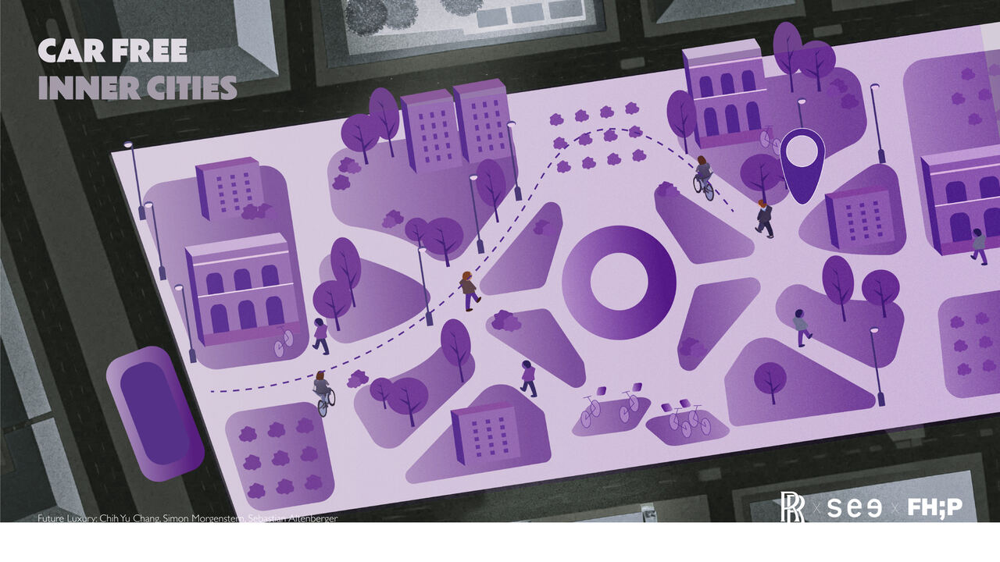
無車市中心的想像圖（插圖：張致瑜）Envisioning the car-free inner city (illustration: Chih-yu Chang)
接著我們把六個未來因素逐一翻譯成 RR 的機會與張力——汽車過時（車變成「移動的藝術品」，品牌需轉向整體行動體驗）、資源有限、綠能、Polycrisis（品牌必須表態）、價值轉移、數位工藝（自動化世界裡手工藝反而更稀缺）。我負責「汽車過時」段的分析與期末簡報主講。We then translated six future factors into opportunities and tensions for RR — cars becoming obsolete (the car turns into "mobile art"; the brand must move toward holistic mobility), finite resources, green energy, polycrisis (brands must take positions), shifting values, and digital craftsmanship (handcraft grows scarcer — and more precious — in an automated world). I owned the "cars are obsolete" analysis and presented that section in the final review.
03問題定義Framing the Problem
如何讓 Rolls-Royce 車主在無車市中心，依然擁有獨立、安全、優雅的旅程？我們沒有迴避這個提案最大的槽點，反而把它放上簡報：「勞斯萊斯車主騎滑板車？也太牽強了吧！」——正面回應質疑，成為整份敘事的張力來源。How might a Rolls-Royce owner still enjoy an independent, safe, and elegant ride in a car-free city center? We didn't dodge the concept's biggest objection — we put it on a slide: "That's quite a stretch — a Rolls-Royce owner on a scooter!" Confronting the doubt head-on became the narrative's central tension.
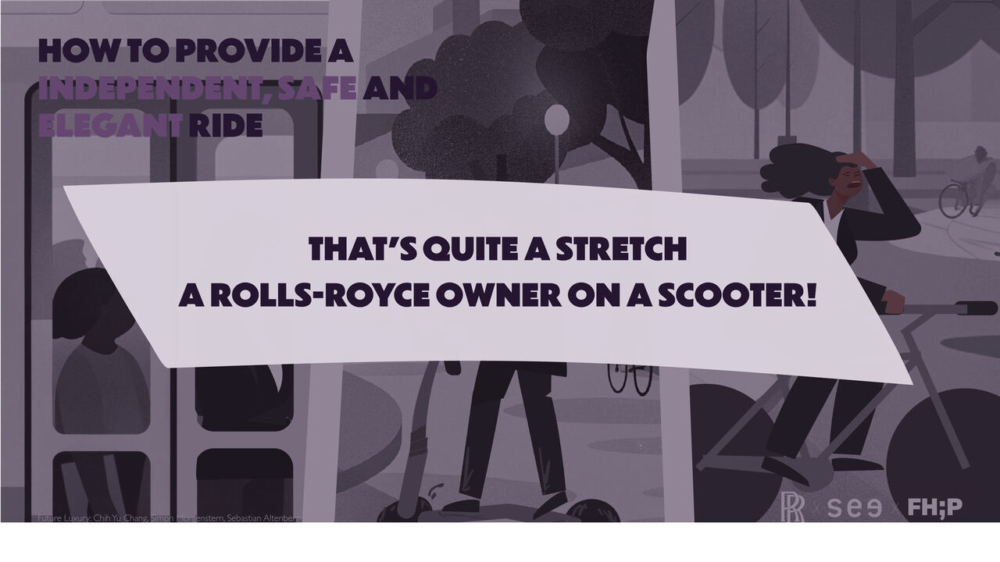
簡報中的自我吐槽——先說出觀眾心裡的疑問，再逐一拆解。Voicing the audience's doubt before answering it, point by point.
概念發散期我們並行探索兩條路線——「實體 add-on 衛星載具」與「城市服務網絡」，我為兩個方向各寫了完整的情境腳本（名人隱私版／攜寵物進城版）。與教授的 consultation 後收斂：以實體產品為主、服務包覆為輔。During divergence we explored two directions in parallel — a physical add-on "satellite vehicle" and an in-city service network — and I wrote full scenario scripts for both (a privacy-minded celebrity version and a dog-owner version). After faculty consultations we converged: physical product first, wrapped in service.
04最終概念：EIDOLON 三件組The Concept: EIDOLON, a Trio
命名取自古希臘文 εἴδωλον（幻影、分身）——刻意呼應 Rolls-Royce 的 Ghost、Wraith、Phantom 命名譜系：它是你的勞斯萊斯在無車城市裡的分身。Named after the ancient Greek εἴδωλον — apparition, double — deliberately echoing Rolls-Royce's Ghost, Wraith, and Phantom lineage: it is your Rolls-Royce's double in the car-free city.
A. 滑板車：收納於車側翼，如花朵般展開A. The Scooter: Stowed in the Fender, Unfolds Like a Flower
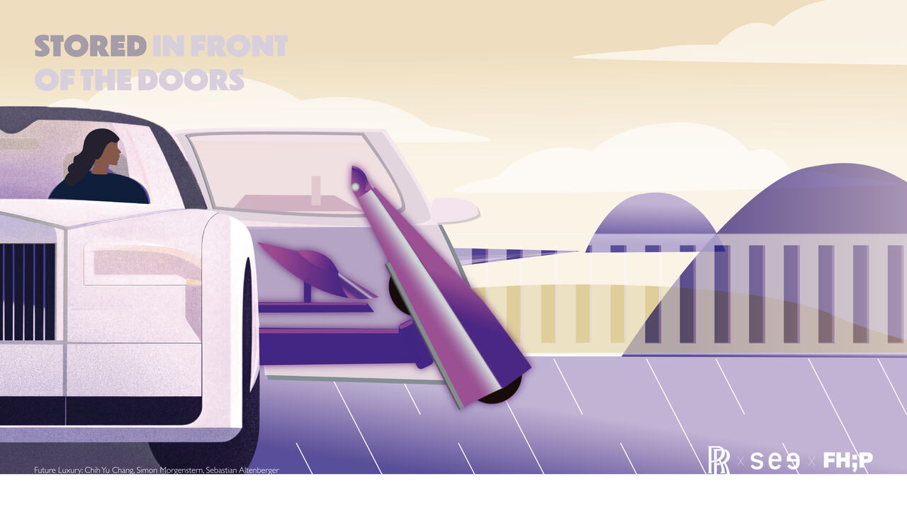
收納於 suicide doors 前側翼、常時充電Stored ahead of the suicide doors, always charged
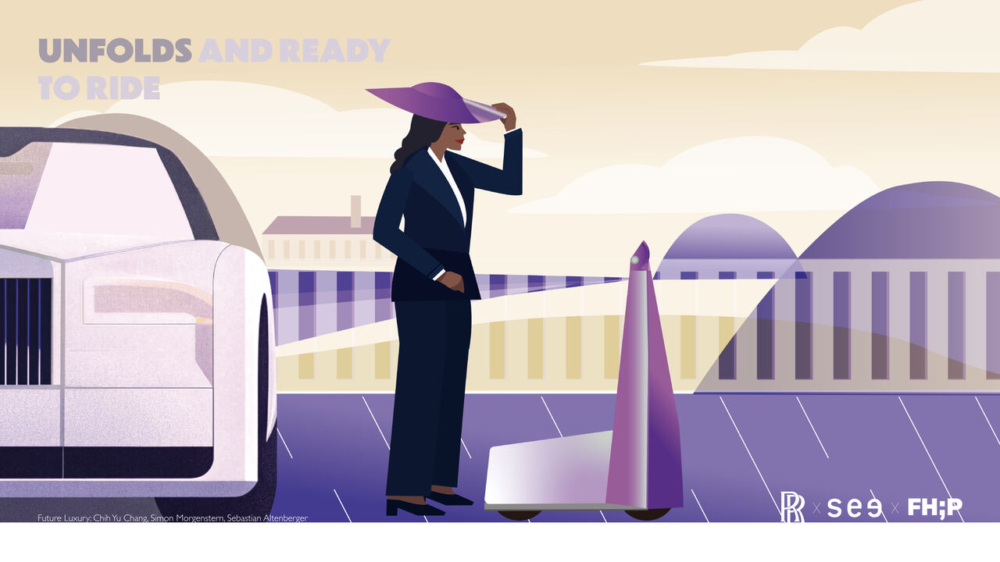
自動送出、自行展開、即刻可騎Auto-extends, self-unfolds, ready to ride
雙側寬踏板平行站立、可升降底盤——上下車不彎腰，停等紅燈時穩定站立不必下車Wide parallel footboards and a lowerable chassis — no bending to mount, stable standing at red lights without dismounting
超出手部的大型前擋與寬胎懸吊，把 Magic Carpet Ride 的行路質感帶到兩輪上An oversized front shield and wide cushioned tires bring the Magic Carpet Ride to two wheels
一鍵摺疊後如行李箱拖行，直接交給門房代管One-touch folding turns it into a wheeled suitcase you hand to the doorman
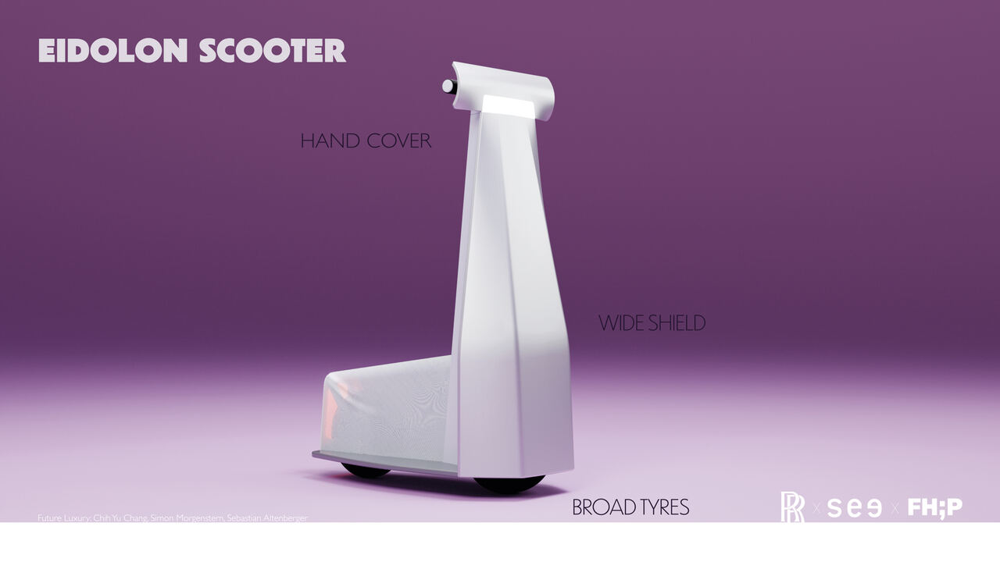
設計解剖：手部護罩、風擋、寬胎Anatomy: hand cover, windshield, broad tyres
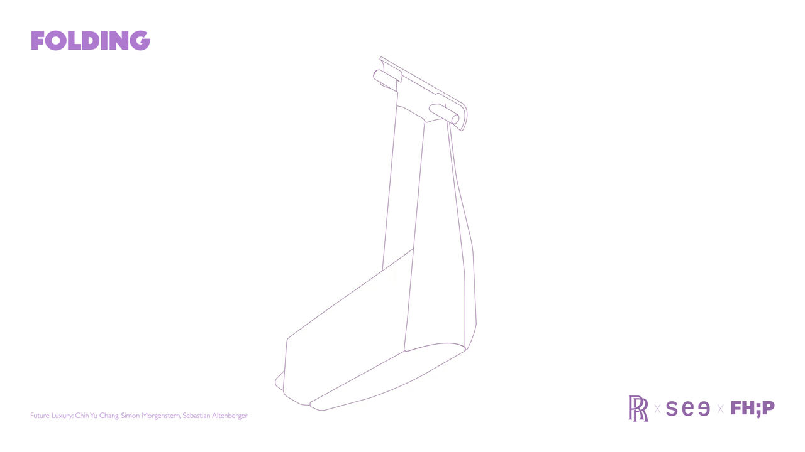
摺疊機構研究Folding mechanism study
B. Bespoke 頭飾：資訊在視野裡，不在手機上B. Bespoke Headpieces: Information in Your View, Not on Your Phone
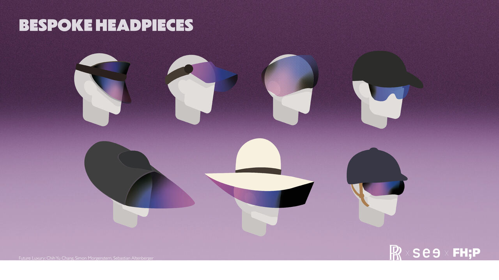
從 smart glasses 到時尚帽款的個人化系列A bespoke range from smart glasses to fashion hats
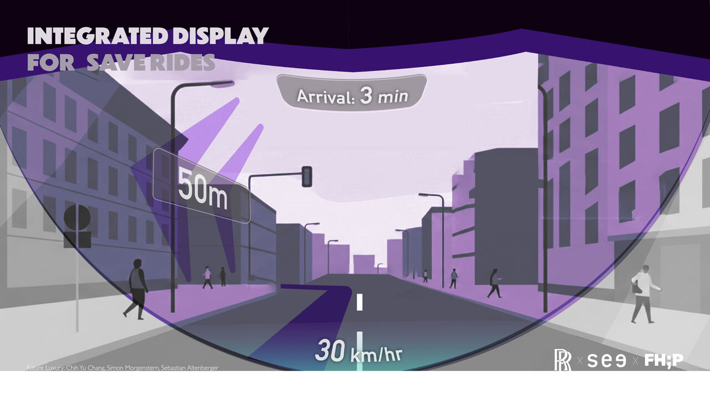
visor HUD：導航投影於視野，停等時自動轉為透明Visor HUD: navigation in view, auto-transparent when stopped
C. Live Concierge Service：真人禮賓延伸到車外C. Live Concierge Service: Human Concierge Beyond the Car
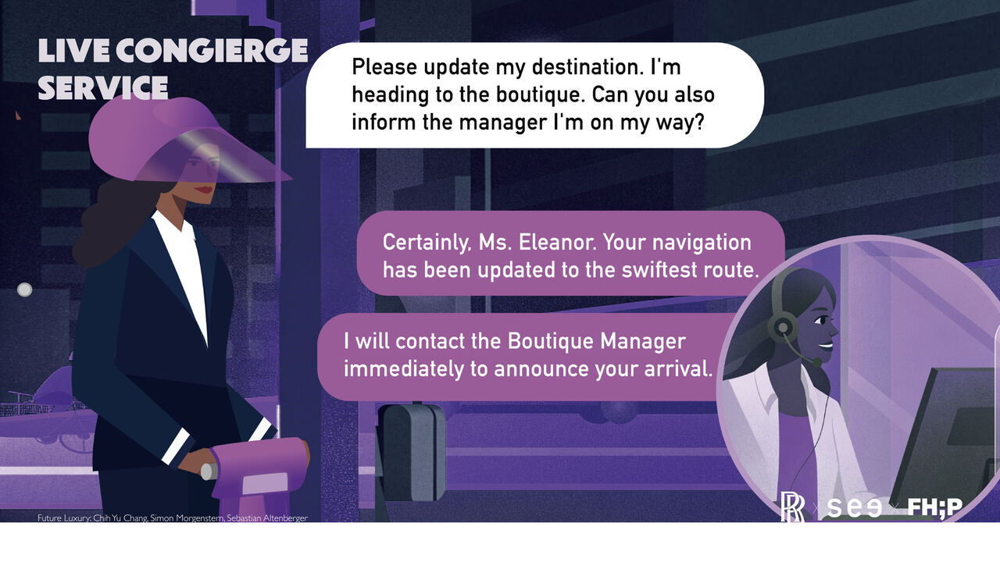
整合 Whispers App 的真人禮賓：主動更新路線、代為通知目的地——「Certainly, Ms. Eleanor.」A live concierge in the Whispers app: proactive rerouting, calls ahead on your behalf — "Certainly, Ms. Eleanor."
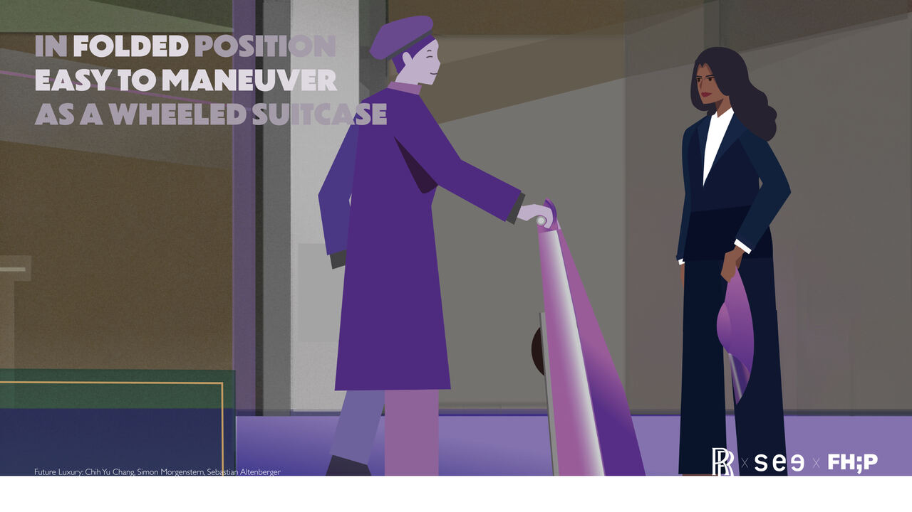
抵達後：摺疊、拖行、交給門房，旅程優雅收尾。On arrival: fold, roll, hand over — an elegant end to the journey.
05我的角色：用情境和插圖說服人My Role: Persuading with Scenarios and Illustration
情境腳本：兩個概念方向的完整使用者旅程腳本，最終版本成為手冊與簡報的敘事主軸——從選帽出門、車側展開、騎行與紅燈待機、LCS 對話，到摺疊交給門房。Scenario scripts: full user-journey scripts for both concept directions; the final version became the narrative spine of the brochure and presentation — from choosing your headpiece to handing the folded scooter to the doorman.
全套分鏡插圖：以 RR 紫為基調繪製整個 user journey 的 storyboard 與城市氛圍圖——上方所有敘事插圖即為此系列。插圖統一了團隊的視覺語言，也是 BMW 展場敘事的核心資產。The full storyboard illustration set: I illustrated the entire user journey and city scenes in the RR purple palette — every narrative illustration on this page is from that series. It unified the team's visual language and anchored the BMW exhibition storytelling.
未來因素分析與簡報主講（「汽車過時」段），及微型移動市場研究的亞洲視角輸入（台灣 YouBike 制度等）。Futures factor analysis and final-review presenting (the "cars are obsolete" section), plus Asian-market input to the micromobility research (e.g., Taiwan's YouBike system).
跨文化協作的註腳：這是一支中德混編團隊，工作語言在英德文之間切換。我學會用畫面代替語言辯論——當一張分鏡能讓所有人點頭，就不需要三十分鐘的討論。A note on cross-cultural collaboration: we were a Taiwanese-German team switching between English and German. I learned to argue with images instead of words — when one storyboard frame gets everyone nodding, you don't need a thirty-minute debate.
06原型、專利檢索與 BMW 總部展出Prototype, Patent Search & the BMW Exhibition
原型驗證：1:1 testing mule 與 3D 列印樞軸驗證摺疊機構與站姿。Prototyping: a 1:1 testing mule and 3D-printed pivots validated the folding mechanism and riding stance.
專利前案檢索：以 espacenet 與 Google Patents 檢索可升降底盤與主動懸吊相關前案（CN108001585A、US10289650B2 等），確認機構的新穎性空間。Prior-art search: espacenet and Google Patents searches on lowerable chassis and active suspension (CN108001585A, US10289650B2, etc.) mapped the novelty space.
2026 年 3 月 3 日，BMW 慕尼黑總部展出：EIDOLON 於 BMW 總部展覽，BMW 主管現場詢問團隊的專利申請意願並建立專利窗口聯繫——對一個學期專題而言，這是最有力的外部驗證。March 3, 2026 — exhibited at BMW HQ, Munich: EIDOLON was shown at BMW headquarters, where BMW executives asked about the team's interest in patenting and connected us with their patent office — for a semester project, the strongest external validation we could ask for.
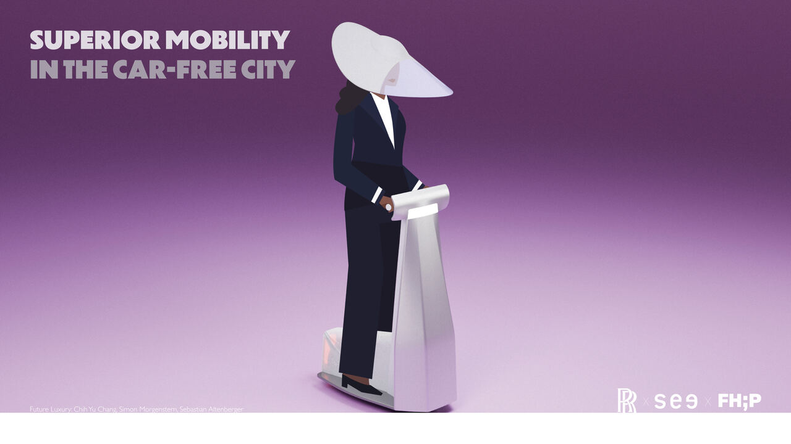
Superior Mobility in the Car-Free City.Superior Mobility in the Car-Free City.
07學到的事What I Learned
奢華是體驗的連續性，不是單一產品。EIDOLON 的說服力不在滑板車本身，而在「體驗不中斷」：從車、到展開、到 HUD、到禮賓、到門房，任何一個縫隙漏了，奢華就斷了。Luxury is continuity of experience, not a product. EIDOLON's persuasiveness isn't the scooter — it's the unbroken chain from car to unfold to HUD to concierge to doorman. One gap, and the luxury breaks.
先替觀眾說出質疑，敘事才有張力。「RR 車主騎滑板車也太牽強」這頁自我吐槽，反而是整份簡報最抓人的一頁。Voice the audience's doubt before they do. The self-roasting "that's quite a stretch" slide turned out to be the most gripping page of the deck.
插圖是跨語言團隊的共通語。在英德文交錯的協作裡，分鏡是最快的對齊工具——也讓我確認了「視覺敘事」是我在團隊裡不可替代的位置。Illustration is a multilingual team's common tongue. Amid English-German collaboration, storyboards were the fastest alignment tool — and confirmed visual storytelling as my irreplaceable seat at the table.